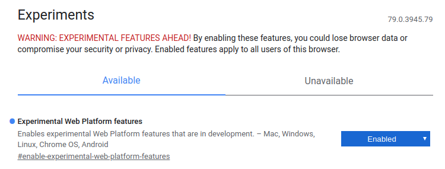

Scan for nearby advertising Bluetooth devices from the web browser
| transmitterId * | rssi | dec | timestamp |
|---|
* the transmitterID is not the 48-bit Bluetooth advertiser address but rather a 128-bit Identity Resolving Key.
Web Bluetooth Scanning is an experimental feature
The Web Bluetooth Scanning feature demonstrated here is available only in specific browsers under specific conditions, as to be expected given that:
[Web Bluetooth Scanning] is not a W3C Standard nor is it on the W3C Standards Track
Chrome/Chromium version 79+ supports Web Bluetooth Scanning on Android and desktop. Check your version by browsing to:
chrome://version
The Experimental Web Platform features flag must be enabled for Web Bluetooth support. Enable this feature by browsing to:
chrome://flags/#enable-experimental-web-platform-features
Under this configuration, Web Bluetooth Scanning may nonetheless not function due to OS or hardware constraints. Verify the Bluetooth adapter status by browsing to:
chrome://bluetooth-internals/#adapter
Chrome/Chromium is the only browser successfully tested to date. See the Web Bluetooth Community Group Implementation Status for updates.
On the Opera browser, if the functionality becomes available, it will likely be behind a flag:
opera://flags/#enable-web-bluetooth